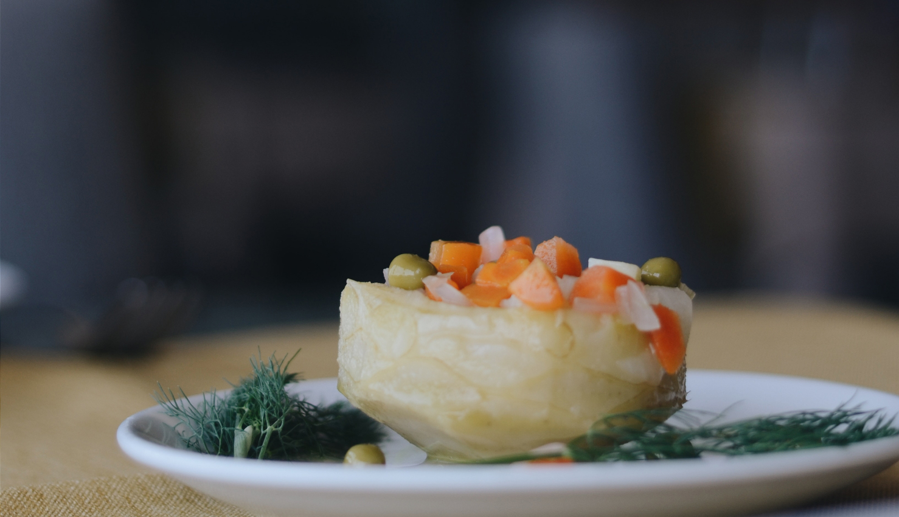
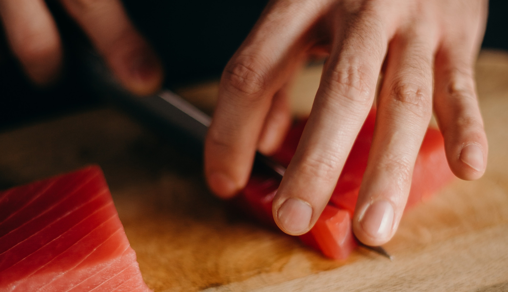

01
起源
追溯至1989年，現今『私覓』主理人與多位摯友於日本東京時，在一場日本料理私廚派對，每一份獨特、專注並為客人專屬服務的精緻美食深深打動了所有人，一道道精妙的美食彷如一股溫暖的陽光，深刻烙印在心中。帶著這份心境，創立了『私覓』，想讓年少時那回憶中的美好獻給每位體驗日料到府私廚的您們。

02
品牌理念
成為妳疲倦日常的那雙手，為妳下廚。為初心，『私覓』到府私廚，貫徹日式「款待」（おもてなし）的心境，導入匠心傾心的服務態度，從您入座的那一刻即為您送上『迎賓湯品』，私廚們用最真誠的態度最極致的工藝完成每道料理，您可以在此時此刻將平日的辛勞與煩惱放下，我們會成為您的雙手，獻上一道道精妙鮮美的佳餚，讓您能在幸福與溫暖中度過這段專屬私廚的時刻。

03
職人匠心
主理人堅信，美味來自於匠心的細節裡，在最佳手藝與環境下展現每道佳餚的品質與堅持，私廚們多年來嚴守和食之道，從親至漁港、農村選料並以日式料亭的傳統華美手藝，一刀、一握、一杓為您烹煮，讓您體驗來自大江戶時代流傳至今的日本手藝。